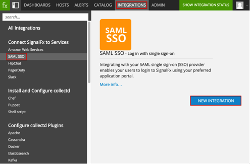
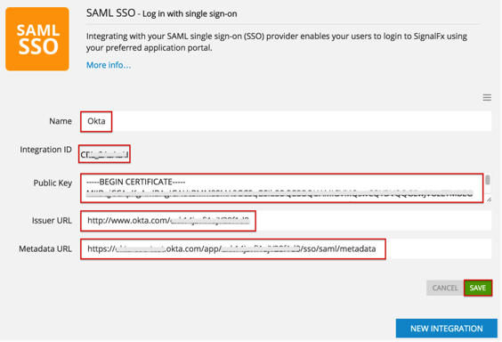
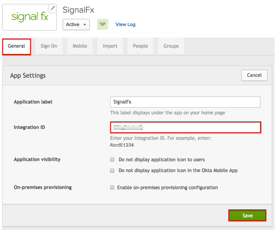

Navigate to INTEGRATIONS > SAML SSO and select the NEW INTEGRATION button, as shown below.


Okta
Sign in to the Okta Admin dashboard to generate this value.
Sign in to the Okta Admin dashboard to generate this value.
Sign in to the Okta Admin dashboard to generate this value.

Done!
Note: IdP-initiated flows and Just In Time (JIT) provisioning are supported. SP-initiated flows are not supported.